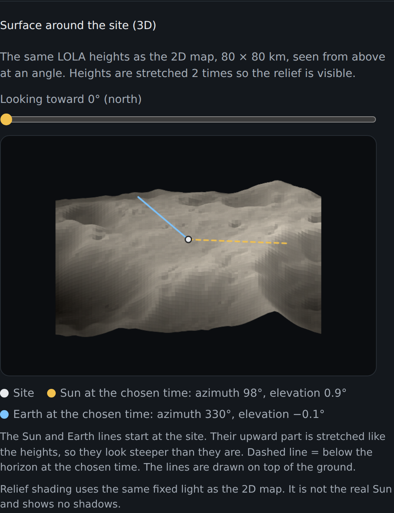

Terrain horizon from LRO LOLA · items h, i, j
Near the south pole, the horizon is the terrain, not a smooth Moon.
- At IM-1 and IM-2 the horizon is the skyline of LOLA heights around the site, traced in every direction.
- A 2D map and a 3D surface of LOLA heights, 80 × 80 km around the site, with the Sun and Earth directions at the chosen time.
- Every other site uses the ideal sphere horizon and says so.


Relief shading uses a fixed light, not the real Sun.5 / 7